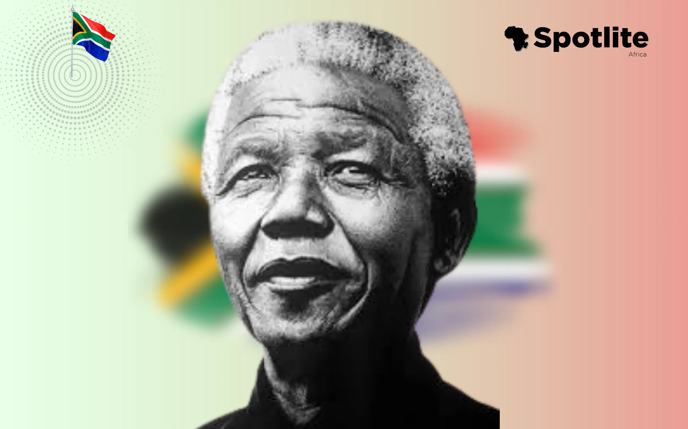
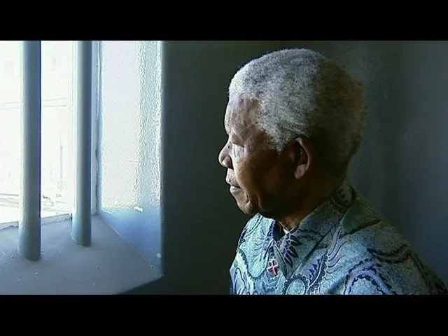

Nelson Mandela: The Man Who Forgave So a Nation Could Heal
If freedom had a heartbeat, it would sound like Mandela’s voice, calm, measured, but impossible to ignore. He wasn’t born to be a prisoner, yet he endured 27 years in a cage so others could fly. He wasn’t born to rule, yet he led a wounded nation to healing. What do you call a man who chooses peace when war is easier? A changemaker. A king. A storm dressed in patience.
From Village Boy to Global Giant
Mandela was born in 1918 in a small South African village, Qunu, a place where dreams were as scarce as running water. But even then, there was a quiet rebellion in his blood. His name, Rolihlahla, literally means “pulling the branch of a tree”, a troublemaker. And oh, what beautiful trouble he caused.
He studied law when his people weren’t supposed to read. He joined the ANC when speaking up meant disappearing. He danced with danger like it was his shadow, not because he was fearless, but because he believed that some chains are meant to be broken, no matter the cost.
The Man Who Faced a Nation’s Demons
To understand Mandela’s greatness, you must understand the monster he faced. Apartheid wasn’t just policy, it was a poison. A system that said Black was less. That separated families, erased identities, and turned homes into prisons. But Mandela didn’t blink. He took the system by its throat and demanded: Enough.
He led protests. He gave speeches. He took bullets of rejection, exile, betrayal, and still, he walked forward, barefoot, but never bowed.
When they arrested him and threw him into Robben Island, they thought they were locking up a man. What they didn’t know was that they were planting a seed. And seeds don’t die, they grow. From that lonely cell, Mandela grew into a global symbol. A lighthouse for every broken land. A whisper that became a war cry.
27 Years in Prison. 1 Vision for Peace.
Imagine the world moving on for 27 years while you sit behind bars, watching seasons change through iron. Most would rot. Most would come out with fire and revenge.
Mandela came out with an olive branch.
He forgave his captors. He shook hands with the architects of apartheid. He didn’t just open the jail door, he opened a nation’s wound and said, Let’s heal, not hurt.
That kind of forgiveness isn’t normal. It’s divine. It’s art. He turned bitterness into bridges. Pain into policy. Hate into hope. And when the world offered him power, he took it, not to reign, but to restore.
The Father of the Rainbow Nation
.webp)
When Mandela became South Africa’s first Black president in 1994, he didn’t just change politics. He changed the atmosphere. The air itself carried new meaning. Children of all races could now play together without fences. Songs of unity rose where screams of separation once lived.
He launched the Truth and Reconciliation Commission, not to punish, but to uncover. Because you can’t heal what you hide.
He showed us that leadership isn't about thrones. It's about thorns, the ones you're willing to walk on for your people.
The World Stood Still for Mandela
.webp)
It’s rare for a man’s life to silence the world when it ends, but in 2013, when Mandela passed away, the globe didn’t just mourn. It bowed.
Presidents, kings, celebrities, they all came to pay homage to a man who taught them that real power is not in the sword, but in the stillness of your spirit.
Statues were built. Streets renamed. Quotes carved into marble. But Mandela’s true legacy? It lives in the hearts of people who still believe in justice, in peace, and in the power of standing tall even when the storm rages.
Giving Him His Flowers
.webp)
Mandela didn’t fight for applause. He fought for the unborn, the unseen, the unloved, and now, we owe him more than just memory. We owe him momentum.
He is the reason South Africa could laugh again. The reason the world believes that change is possible, not just in stories, but in streets, in systems, in skin.
So here, we raise our voices: To Madiba, the lion who roared for the voiceless. The flame that warmed a frozen land. The dreamer who didn’t just dream, he dragged the dream into reality.
To the Changemakers of Today
Look around, young visionary. Mandela left the torch. And it’s burning still.
In your classroom, on your street, in your silence, you carry the potential to shake the world. You don’t need to be famous. You need to be fierce with your love, loyal to justice, and unafraid to walk alone.
Because like Mandela once said: “It always seems impossible until it’s done.”
So rise, changemaker. The world still needs your voice.
But neither is the dream.
Spotlite Africa honors Nelson Mandela, not as a chapter in history, but as a compass for our future. Because legends don’t die. They echo.